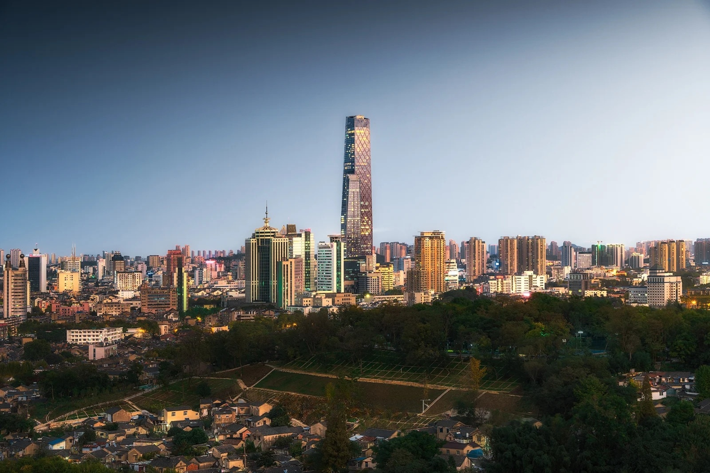
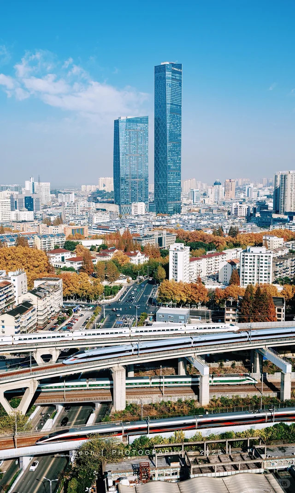
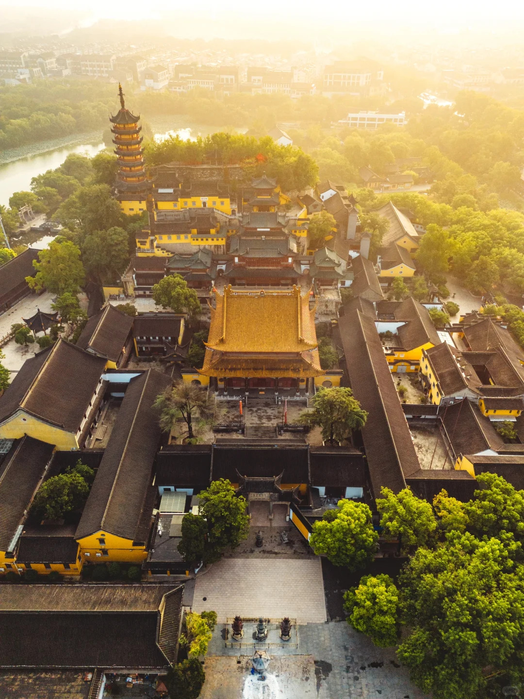
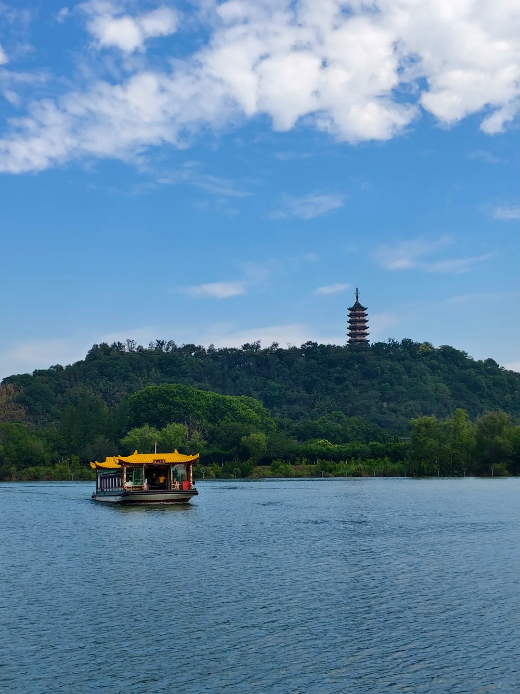
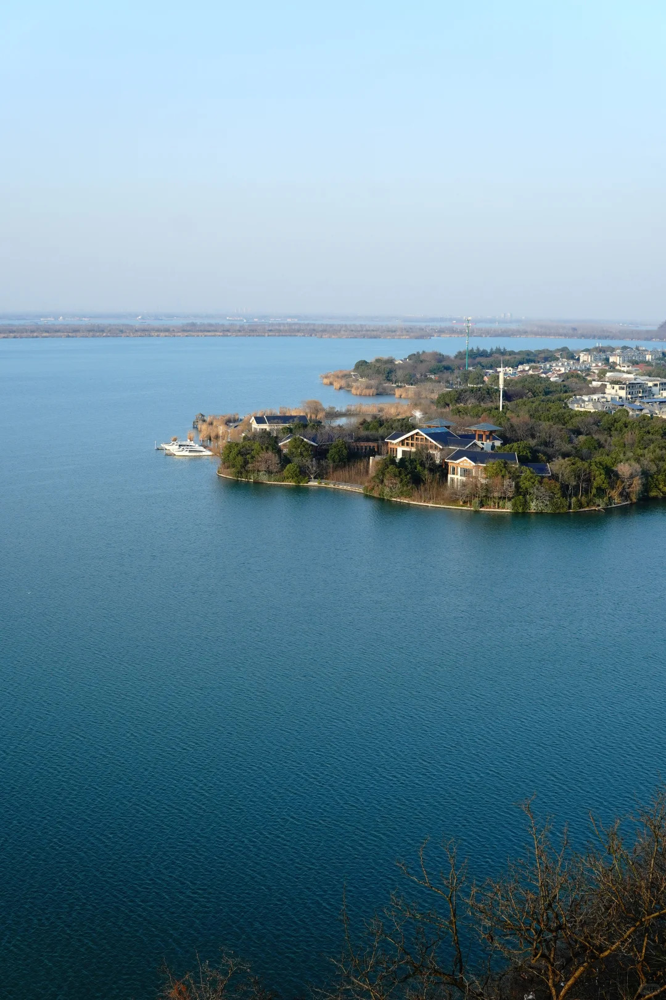
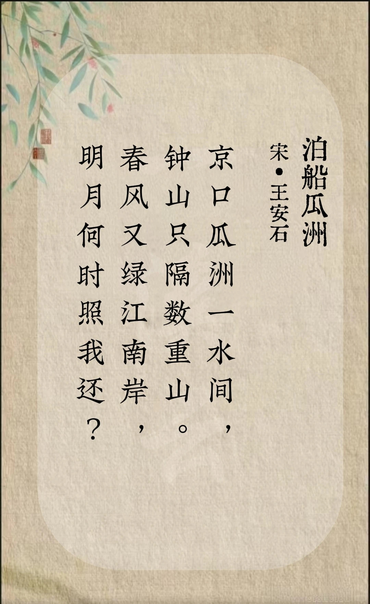
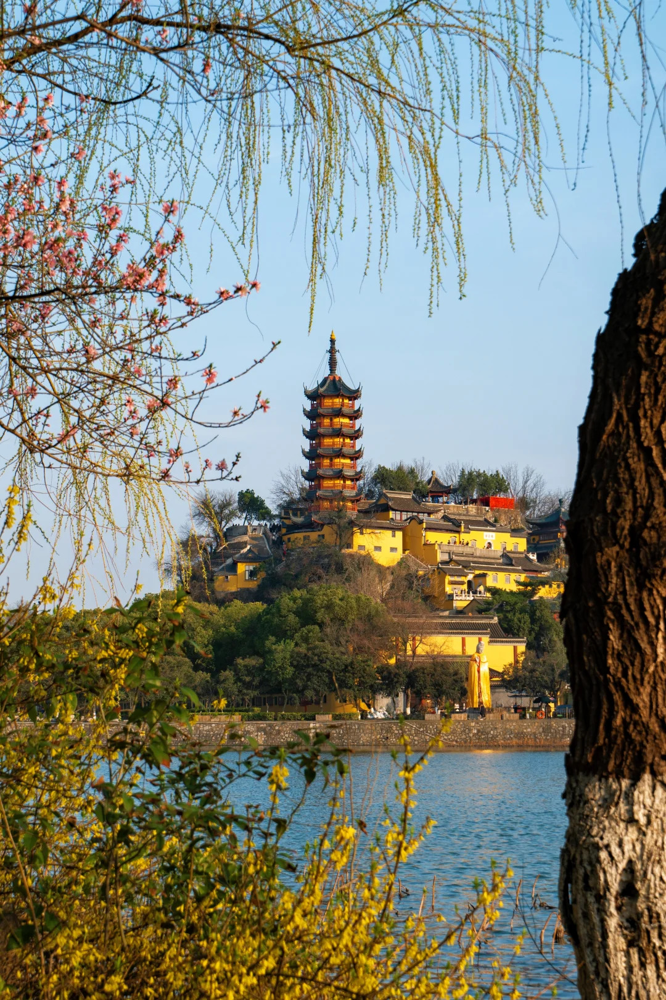
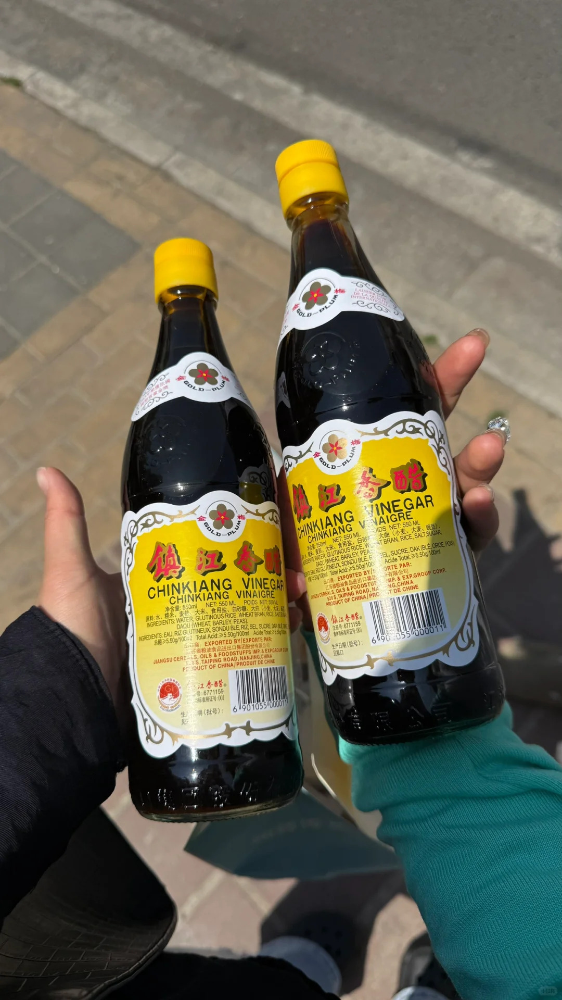

A City of Mountains and Rivers
With a history spanning over 3,000 years, Zhenjiang stands as a testament to the enduring spirit of Jiangnan culture. It is a city where ancient legends breathe life into misty mountains, and where the rhythmic flow of two great waterways has shaped its destiny.
Once a crucial fortress and a bustling port, today it offers a serene escape, blending profound historical depth with breathtaking natural beauty.


Famous for the Jinshan Temple and the legend of the White Snake. The mountain is entirely covered by the temple, creating a spectacular sight.

An island rising from the Yangtze River, known for its lush greenery, ancient steles, and the historic Dinghui Temple hidden within.

Steeped in Three Kingdoms history. Its strategic location offers panoramic views of the mighty Yangtze River rolling eastward.
"Spring wind greens the southern bank of the river again, when will the bright moon illuminate my return?"
"Where can I see the central plains? The scenery fills my eyes at Beigu Pavilion."


Zhenjiang is the stage for one of China's Four Great Folktales. The epic battle of "Flooding Jinshan Temple" (水漫金山) took place right here, where the White Snake spirit fought the monk Fahai to save her human husband.
This timeless tale of love, magic, and devotion is woven into the very fabric of the city, making Jinshan Temple a pilgrimage site for romantics and folklore enthusiasts alike.

Renowned across China, this black vinegar is an essential part of the local identity. Aged to perfection, it offers a complex, rich, and slightly sweet flavor that elevates any dish.
A culinary curiosity and a local favorite. The noodles are boiled with a small wooden pot cover floating in the water, a unique method that results in a perfectly chewy texture.
While deeply rooted in antiquity, Zhenjiang is a dynamic, forward-looking city. Its modern infrastructure, including the magnificent Runyang Yangtze River Bridge, connects its glorious past to a boundless future.
Situated at the intersection of the Yangtze River and the Beijing-Hangzhou Grand Canal, Zhenjiang has been a vital hub of transport and commerce for millennia. Today, it remains a vibrant city welcoming visitors from across the globe.